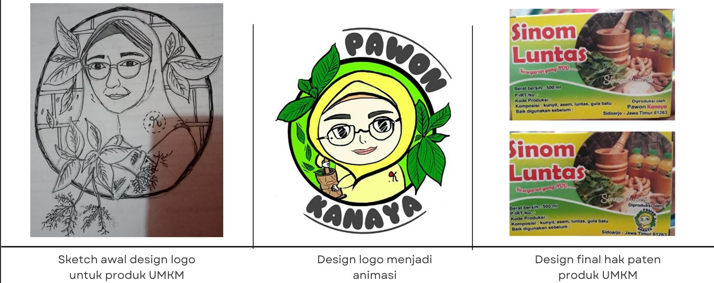
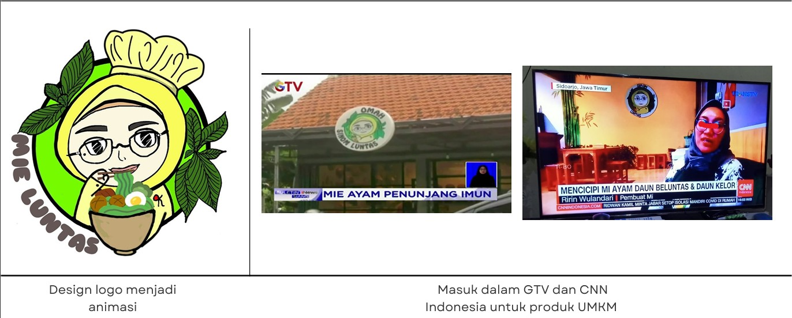

Detail Dokumen
Judul Dokumen
Deskripsi akan muncul di sini.
Catatan Tambahan / Spesifikasi:
Keterangan rinci.
Selamat datang! Saya Nurhaliza Sofia Yunus — Profesional Staff Keuangan dengan pengalaman sejak 2019 dalam pencatatan transaksi, serta penulis & desainer kreatif yang berdedikasi.
2019 - Skrg
Finance & Tax Admin
GTV & CNN
Liputan Media Nasional
2018 - Skrg
IDN Community Writer
KOCIS 2023
Wartawan Kehormatan Korea
Rekam jejak profesional, aktivitas kepemudaan, dan pendidikan akademis.
PT. Dewenei Trans Indonesia
IDN Community Writer
Radio Suara Surabaya 100fm
World Merit Indonesia
S1 Marketing / Pemasaran
MIA / IPA
Kementerian Kebudayaan, Olahraga, dan Pariwisata Korea (19 Mei 2023)[cite: 1]
IDN Times Community, IDN Media (6 Maret 2021)[cite: 2]
Suara Surabaya FM 100 (14-15 September 2019)[cite: 3]
Pilih kategori di bawah dan klik karya untuk melihat detail beserta gambarnya.

Alur pembuatan logo UMKM mulai dari sketsa pensil awal, transformasi karakter animasi bertema herbal, hingga desain akhir label kemasan "Sinom Luntas" yang terdaftar hak paten.

Pengembangan karakter animasi chef untuk produk kuliner sehat "Mie Ayam Penunjang Imun". Brand identity ini terbukti sukses dan mendapatkan liputan media nasional di GTV dan CNN Indonesia.
Kemampuan teknis di bidang administrasi keuangan, perpajakan, dan kreasi konten.
Keahlian Olah Data, Perpajakan & Transaksi
Penulisan Artikel, Branding Logo & Poster